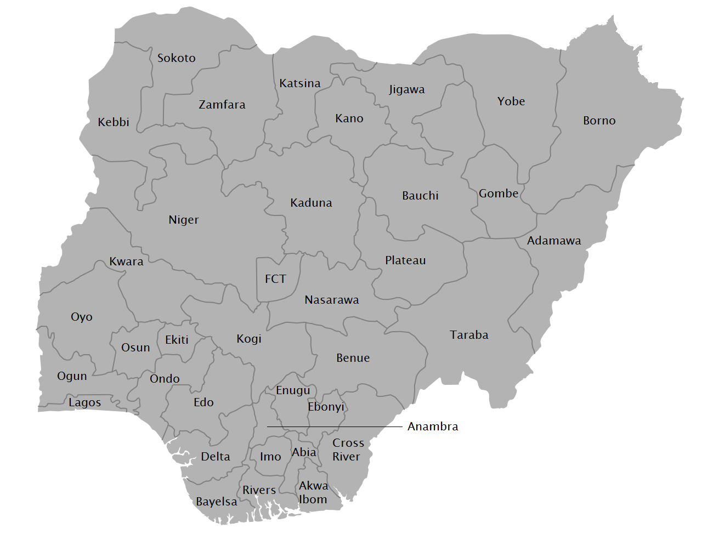

Official Digital Registration Platform
The official digital registration system designed to strengthen internal
democracy, promote transparency,
and ensure credible participation
nationwide.
Nationwide Presence
See how the ADC movement is growing across all 36 states and the FCT.
States Covered
Leading States

Join The movement
Choose your registration category and become part of the ADC movement.
Register as the officail Member of the African
Democratic Congress and be part of buildinga a
stronger nations
Register your support group and join the movement for
postive change
Access and download your official ADC membership card instantly.
Download your cardAbout the Platform
The ADC Registration Platform is the official digital registration system of the
African Democratic Congress,
established to strengthen internal democracy, promote transparency, and ensure credible participation
across all levels of the
party structure nationwide.
Our platform is committed to fostering inclusive political engagement, ensuring that
every voice is heard and every
member has the opportunity to participate in shaping the
future of our great nation.
Ensuring fair and transparent processes within
the party structure.
Open governance and responsible leadership at
all levels
Promoting free, fair, and credible elections
nationwide.
Welcoming all citizens to participate in building
our nation.
Take the first step towards building a better nation. Register today and become
an active participant in our
democratic process.
© 2026 African Democratic Congress (ADC). All rights reserved